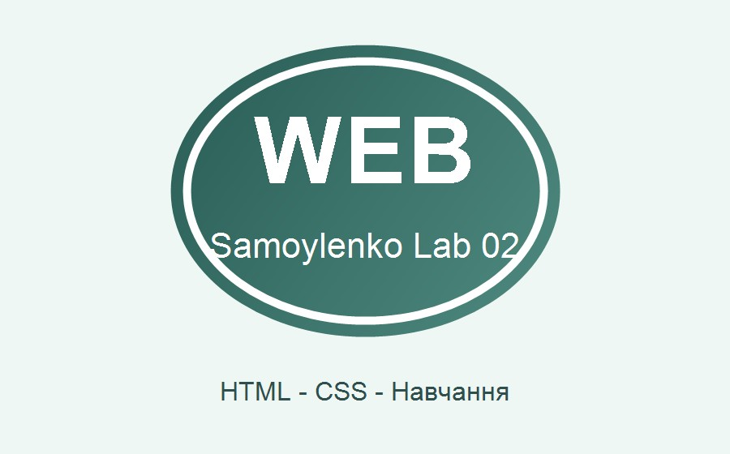

Моя Web-сторінка з емблемою

Про мене
Мене звати Самойленко Олександр. Я навчаюся у групі 304-ТН та опановую Web-програмування.
Мої захоплення
У вільний час я цікавлюся комп'ютерними технологіями, програмуванням, музикою та активним відпочинком.
Чому мені подобається програмування
Програмування дає змогу створювати корисні проєкти, розвивати логічне мислення та втілювати власні ідеї.